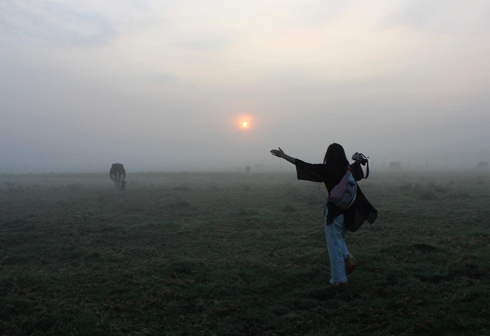

Rebecca Shen is a landscape designer and researcher.
She is inspired by design as pursuits of worldmaking, especially to advance interspecies justice and collectivity during times of challenge.
Through her design work, she has explored topics of ecological restoration, regenerative food systems, animal rights, and local environmental stewardship.
Rebecca graduated with a Master in Landscape Architecture at Harvard Graduate School of Design in 2023.
There, she completed her design thesis, Sanctuary State: California’s Cowscape in Transition, which envisions the transformation of an 800-acre industrial cattle feedlot into a cow sanctuary in the San Joaquin Valley.
Rebecca also graduated with a Bachelor of Science in Architecture from Washington University in St. Louis in 2020.
Email: beccshen@gmail.com
LinkedIn
© 2023 Rebecca Shen